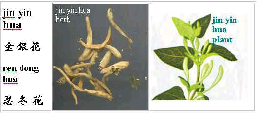

<!DOCTYPE html>
<html><head>
<link rel="canonical" href="https://alternativehealing.org/ren_dong_hua.htm">
<link rel="stylesheet" href="site.css">
<meta name="viewport" content="width=device-width, initial-scale=1"><meta http-equiv=Content-Language content=en-us><meta http-equiv=Content-Type content="text/html; charset=utf-8"><title>jin yin hua, Complementary and Alternative Healing University</title><style fprolloverstyle>A:hover{color:#FF0000}</style><meta name="Microsoft Border" content="none, default"></head><body><table border=0 cellspacing=0 width=300 height=1 bgcolor=#66CCFF style="border-collapse: collapse" bordercolor=#111111 cellpadding=0><tr><td width=79% height=1 valign=top bgcolor=#FFFFFF><pre><font size="5" color="#0000FF" face="Arial Unicode MS">jin yin hua </font></pre><pre style="word-spacing: 2; margin-right: 0; margin-top: -5; margin-bottom: 2"><font size="3" color="#000080" face="Arial Unicode MS">By: <a href="teaching_experience_of_joe_h.htm">Joe Hing Kwok Chu</a></font></pre><pre style="word-spacing: 2; margin-right: 0; margin-top: -5; margin-bottom: 2">&nbsp;</pre><pre style="word-spacing: 2; margin-right: 0; margin-top: -5; margin-bottom: 2"><font face="Arial Unicode MS"></font></pre><pre style="word-spacing: 2; margin-right: 0; margin-top: -5; margin-bottom: 2">&nbsp;</pre><pre style="word-spacing: 2; margin-right: 0; margin-top: -5; margin-bottom: 2">&nbsp;</pre><table border=0 cellpadding=0 cellspacing=0 width=549><tr><td valign=top width=680><table border=1 cellspacing=0 width=1% bordercolor=#808000 height=637 style="border-collapse: collapse" cellpadding=0><tr><td width=30% height=62><pre style="margin: -1 3"><font size="3" color="#000080" face="Arial Unicode MS">Pharmaceutical </font></pre><pre style="margin: -1 3"><font size="3" color="#000080" face="Arial Unicode MS">name:</font></pre></td><td width=79% height=62><pre style="margin-left: 3; margin-right: 3"><font size="3" face="Arial Unicode MS">Flos Lonicerae japonicae</font></pre></td></tr><tr><td width=30% height=46><pre style="margin-left: 3; margin-right: 3"><font size="3" color="#000080" face="Arial Unicode MS">botanical name:</font></pre></td><td width=79% height=46><ol><li><pre style="margin: -1 3"><font size="3" face="Arial Unicode MS">Lonicera japonica Thunb., </font></pre></li><li><pre style="margin: -1 3"><font size="3" face="Arial Unicode MS">Lonicera hypoglauca Miq., </font></pre></li><li><pre style="margin: -1 3"><font size="3" face="Arial Unicode MS">Lonicera confusa DC. </font></pre></li><li><pre style="margin: -1 3"><font size="3" face="Arial Unicode MS">Lonicera dasystyla Rehd.</font></pre></li></ol></td></tr><tr><td width=30% height=48><pre style="margin: -1 3"><font color="#000080" size="3" face="Arial Unicode MS">Pron.in </font></pre><pre style="margin: -1 3"><font color="#000080" size="3" face="Arial Unicode MS">Japanese:</font></pre></td><td width=79% height=48><pre style="margin-left: 3; margin-right: 3"><font size="3" face="Arial Unicode MS">kinginka</font></pre></td></tr><tr><td width=30% height=17><pre style="margin: -1 3"><font color="#000080" size="3" face="Arial Unicode MS">Pron.in </font></pre><pre style="margin: -1 3"><font color="#000080" size="3" face="Arial Unicode MS">Korean:</font></pre></td><td width=79% height=17><pre style="margin-left: 3; margin-right: 3"><font size="3" face="Arial Unicode MS">kumunhwa</font></pre></td></tr><tr><td width=30% height=48><pre style="margin: -1 3"><font color="#000080" size="3" face="Arial Unicode MS">Pron. in </font></pre><pre style="margin: -1 3"><font color="#000080" size="3" face="Arial Unicode MS">Cantonese:</font></pre></td><td width=79% height=48><pre style="margin-left: 3; margin-right: 3"><font size="3" face="Arial Unicode MS">kam ngan fa</font></pre></td></tr><tr><td width=30% height=25><pre style="margin-left: 3; margin-right: 3"><font color="#000080" size="3" face="Arial Unicode MS">Common Name:</font></pre></td><td width=79% height=25><pre style="margin-left: 3; margin-right: 3"><font size="3" face="Arial Unicode MS">honey sucker flower</font></pre></td></tr><tr><td width=30% height=25><p style="margin-left: 3; margin-right: 3"><font size=3 color=#000080 face="Arial Unicode MS">Other names:</font></p><p style="margin-left: 3; margin-right: 3"><font size=3 color=#000080 face="Arial Unicode MS">&#21029;&#21517;&#65109;</font></td><td width=79% height=25><p style="line-height: 150%; margin: -1 3"><font size=3 face="Arial Unicode MS">ren dong hua &#24525;&#20908;&#33457;, shuang hua &#38617;&#33457;, er hua &#20108;&#33457;,</font></p><p style="line-height: 150%; margin: -1 3"><font size=3 face="Arial Unicode MS">er bao hua &#20108;&#25265;&#33457;, yin hua &#37504;&#33457;&#12290;</font></td></tr><tr><td width=30% height=25><pre style="margin-left: 3; margin-right: 3"><font color="#000080" size="3" face="Arial Unicode MS">Distribution:</font></pre></td><td width=79% height=25><pre style="margin-left: 3; margin-right: 3"><font size="3" face="Arial Unicode MS">mainly produced in Shantung and Henan provinces of China</font></pre><pre style="margin-left: 3; margin-right: 3"><font face="Arial Unicode MS" size="3">&#20027;&#29986;&#26044;&#23665;&#26481;&#65104;&#27827;&#21335;&#12290;</font></pre></td></tr><tr><td width=30% height=48><pre style="margin: -1 3"><font color="#000080" size="3" face="Arial Unicode MS">Properties </font></pre><pre style="margin: -1 3"><font color="#000080" size="3" face="Arial Unicode MS">(characteristics)&#65109;</font></pre><pre style="margin-left: 3; margin-right: 3"><font color="#000080" size="3" face="Arial Unicode MS">&#24615;&#21619;&#65109;</font></pre></td><td width=79% height=48><pre style="margin-left: 3; margin-right: 3"><font size="3" face="Arial Unicode MS">sweet and cooling</font></pre><pre style="margin-left: 3; margin-right: 3"><font size="3" face="Arial Unicode MS">&#29980;&#65104;&#28092;&#12290;</font></pre></td></tr><tr><td width=30% height=71><pre style="margin: -1 3"><font size="3" color="#000080" face="Arial Unicode MS">Channels </font></pre><pre style="margin: -1 3"><font size="3" color="#000080" face="Arial Unicode MS">(meridians) </font></pre><pre style="margin: -1 3"><font size="3" color="#000080" face="Arial Unicode MS">entered:</font></pre><pre style="margin-left: 3; margin-right: 3"><font size="3" color="#000080" face="Arial Unicode MS">&#27512;&#32147;&#65109;</font></pre></td><td width=79% height=71><pre style="margin-left: 3; margin-right: 3"><font size="3" face="Arial Unicode MS">lung, heart, large intestine, and stomach</font></pre><pre style="margin-left: 3; margin-right: 3"><font size="3" face="Arial Unicode MS">&#32954;&#65104;&#24515;&#65104;&#22823;&#33144;&#65104;&#32963;&#12290;</font></pre></td></tr><tr><td width=30% height=48><pre style="margin-left: 3; margin-right: 3"><font size="3" color="#000080" face="Arial Unicode MS">Actions &amp; </font></pre><pre style="margin-left: 3; margin-right: 3"><font size="3" color="#000080" face="Arial Unicode MS">Indications:</font></pre><pre style="margin-left: 3; margin-right: 3"><font size="3" color="#000080" face="Arial Unicode MS">&#20027;&#27835;&#65109;</font></pre><pre style="margin-left: 3; margin-right: 3">&nbsp;</pre></td><td width=79% height=48><pre style="margin-left: 3; margin-right: 3"><font size="3" face="Arial Unicode MS">Actions &amp; Indications:</font></pre><ol><li><pre style="line-height: 150%; margin: -1 3"><font size="3" face="Arial Unicode MS">respiratory tract infection, </font></pre></li><li><pre style="line-height: 150%; margin: -1 3"><font size="3" face="Arial Unicode MS">influenza,</font></pre></li><li><pre style="line-height: 150%; margin: -1 3"><font size="3" face="Arial Unicode MS">acute infection of the tonsils,</font></pre></li><li><pre style="line-height: 150%; margin: -1 3"><font size="3" face="Arial Unicode MS">acute infection of the mammary glands,</font></pre></li><li><pre style="line-height: 150%; margin: -1 3"><font size="3" face="Arial Unicode MS">lobar pneumonia,</font></pre></li><li><pre style="line-height: 150%; margin: -1 3"><font size="3" face="Arial Unicode MS">bacterial type of dysentery,</font></pre></li><li><pre style="line-height: 150%; margin: -1 3"><font size="3" face="Arial Unicode MS">acute appendicitis,</font></pre></li><li><pre style="line-height: 150%; margin: -1 3"><font size="3" face="Arial Unicode MS">boils</font></pre></li><li><pre style="line-height: 150%; margin: -1 3"><font size="3" face="Arial Unicode MS">allergy reaction of skin</font></pre></li></ol><pre style="margin-left: 3; margin-right: 3"><font size="3" face="Arial Unicode MS">&#20027;&#27835;&#65109;</font></pre><ol><li><pre style="line-height: 150%; margin: -1 3"><span style="font-family: &#32048;&#26126;&#39636;"><font size="3" face="Arial Unicode MS">&#19978;&#21628;&#21560;&#36947;&#24863;&#26579;&#65104;</font></span></pre></li><li><pre style="line-height: 150%; margin: -1 3"><span style="font-family: &#32048;&#26126;&#39636;"><font size="3" face="Arial Unicode MS">&#27969;&#34892;&#24615;&#24863;&#20882;&#65104;</font></span></pre></li><li><pre style="line-height: 150%; margin: -1 3"><span style="font-family: &#32048;&#26126;&#39636;"><font size="3" face="Arial Unicode MS">&#24613;&#24615;&#25153;&#26691;&#33146;&#28814;&#65104;</font></span></pre></li><li><pre style="line-height: 150%; margin: -1 3"><span style="font-family: &#32048;&#26126;&#39636;"><font size="3" face="Arial Unicode MS">&#24613;&#24615;&#20083;&#33146;&#28814;&#65104;</font></span></pre></li><li><pre style="line-height: 150%; margin: -1 3"><span style="font-family: &#32048;&#26126;&#39636;"><font size="3" face="Arial Unicode MS">&#22823;&#33865;&#24615;&#32954;&#28814;&#65104;</font></span></pre></li><li><pre style="line-height: 150%; margin: -1 3"><span style="font-family: &#32048;&#26126;&#39636;"><font size="3" face="Arial Unicode MS">&#32048;&#33740;&#24615;&#30178;&#30142;&#65104;</font></span></pre></li><li><pre style="line-height: 150%; margin: -1 3"><span style="font-family: &#32048;&#26126;&#39636;"><font size="3" face="Arial Unicode MS">&#24613;&#24615;&#38348;&#23614;&#28814;&#65104;</font></span></pre></li><li><pre style="line-height: 150%; margin: -1 3"><span style="font-family: &#32048;&#26126;&#39636;"><font size="3" face="Arial Unicode MS">&#30320;&#30308;&#33215;&#33131;&#31561;&#30149;&#30151;,</font></span></pre></li><li><pre style="line-height: 150%; margin: -1 3"><font size="3" face="Arial Unicode MS">&#30382;&#33178;&#36942;&#25935;&#21453;&#25033;&#12290;</font></pre></li></ol></td></tr><tr><td width=30% height=48><pre style="margin-left: 3; margin-right: 3"><font size="3" color="#000080" face="Arial Unicode MS">Chemical </font></pre><pre style="margin-left: 3; margin-right: 3"><font size="3" color="#000080" face="Arial Unicode MS">ingredients:</font></pre></td><td width=79% height=48><pre style="margin-left: 3; margin-right: 3"><font size="3" face="Arial Unicode MS">stems contain <a href="saponin.htm">saponin</a>, leaves contain tannin and flowers contain 1% of <a href="#Inosite">inosite</a>.</font></pre></td></tr><tr><td width=30% height=48><pre style="margin-left: 3; margin-right: 3"><font size="3" face="Arial Unicode MS">Dosage:</font></pre><pre style="margin-left: 3; margin-right: 3"><font size="3" face="Arial Unicode MS">&#21137;&#37327;&#65109;</font></pre></td><td width=79% height=48><pre style="margin-left: 3; margin-right: 3"><font size="3" face="Arial Unicode MS">6 ~ 16 g daily.</font></pre><pre style="margin-left: 3; margin-right: 3"><font size="3" face="Arial Unicode MS">&#27599;&#26085;&#37327;&#65109;6 ~ 16 &#20811;&#12290;</font></pre></td></tr><tr><td width=30% height=48><pre style="margin-left: 3; margin-right: 3"><font size="3" face="Arial Unicode MS">Samples of </font></pre><pre style="margin-left: 3; margin-right: 3"><font size="3" face="Arial Unicode MS">formulae:</font></pre></td><td width=79% height=48><pre style="margin: -1 3"><font size="3" face="Arial Unicode MS">(1). </font><font size="3" face="Arial Unicode MS">for promoting urination and healing sores with pus </font></pre><pre style="margin: -1 3"><font size="3" face="Arial Unicode MS">(source: he han yao ying yong) </font></pre><pre style="margin: -1 3"><font size="3" face="Arial Unicode MS">jin yin hua 6 g, <a href="gan_cao.htm">gan cao</a> 3 g, water 600c.c. </font></pre><pre style="margin: -1 3"><font size="3" face="Arial Unicode MS">Simmer to 200 c.c. Made into 3 servings a day </font></pre><pre style="margin: -1 3">&nbsp;</pre><pre style="margin: -1 3"><font size="3" face="Arial Unicode MS">(2).</font><font size="3" face="Arial Unicode MS"> for expelling pus and toxin and rid of carbuncles. </font></pre><pre style="margin: -1 3"><font size="3" face="Arial Unicode MS">(source: hui chun fang). </font></pre><pre style="margin: -1 3"><font size="3" face="Arial Unicode MS"> jin yin hua 10 g, gua lou gen 10 g, sheng <a href="huang_qi.htm">huang qi</a> 6 g, <a href="chuan_shan_jia.htm">chuan shan jia </a>6 g, </font></pre><pre style="margin: -1 3"><font size="3" face="Arial Unicode MS"><a href="dang_gui.htm">dang gui </a>6 g, <a href="jie_geng.htm">jie geng</a> 6 g, <a href="zao_jiao_ci.htm">zao jia ci</a> 6  <a href="bai_zhi.htm">bai zhi </a>4 g, water 600 c.c. </font></pre><pre style="margin: -1 3"><font size="3" face="Arial Unicode MS">Simmer to 200 c.c. </font></pre><pre style="margin: -1 3"><font size="3" face="Arial Unicode MS">Add yellow rice wine 100 c.c. make into 3 servings a day. Take while warm.</font></pre><pre style="margin: -1 3">&nbsp;</pre><pre style="margin: -1 3"><font face="Arial Unicode MS"><span lang="zh-tw"><font size="3">(3)</font></span></font><font size="3" face="Arial Unicode MS"> <span lang="zh-tw">for lessening pimples </span></font></pre><pre style="margin: -1 3"><font face="Arial Unicode MS"><span lang="zh-tw"><font size="3">jin yin hua 30 g, </font></span><font size="3"><a href="gan_cao.htm">gan cao</a></font><span lang="zh-tw"><font size="3"> 5 g. Boil with 2000 c.c. of water. Simmer for 15 minutes. </font></span></font></pre><pre style="margin: -1 3"><font size="3" face="Arial Unicode MS"><span lang="zh-tw">Use as daily tea </span>.</font></pre><pre style="margin-left: 3; margin-right: 3"><font face="Arial Unicode MS"><font size="3">Click here for </font><a href="urinary_tract_infection.htm"><font size="3">formula for urinary tract infection</font></a></font></pre><pre style="margin-left: 3; margin-right: 3"><font face="Arial Unicode MS"><a href="periodontitis_herb_formula.htm"><font size="3">yin hua detoxifying</font></a><font size="3">  tea</font><span lang="zh-tw"><font size="3"> for swollen gum.</font></span></font></pre><font face=Arial><o:p><p style="line-height: 150%; margin-left: 12; margin-top: -1; margin-bottom: -1"><span lang=zh-cn>&#65288;</span><span class><span id=result_box class lang=zh-TW>1&#65289;</span></span><span id=result_box class lang=zh-TW><span>&#20419; &#36914;</span>&#25490;&#23615;<span>&#21644;&#27835;&#30274;</span>&#33215;<span>&#30241;</span><span class>&#65288;&#20358;&#28304;&#65306;</span></span><span id=result_box class><span lang=zh-cn>&#21644;&#28450;&#34277;&#25033;&#29992;&#26041;</span></span><span id=result_box class lang=zh-TW>&#65289;<br> </span><span class><span id=result_box class><span lang=zh-cn>&nbsp;&nbsp;&nbsp;&nbsp;&nbsp;&nbsp;&nbsp;&nbsp;&nbsp; </span></span><span id=result_box class lang=zh-TW>&#37329;</span></span><span id=result_box class lang=zh-TW><span lang=zh-cn><span id=result_box class>&#37504; &#33457; </span></span>6&#20811;&#65292; </span><o:p><o:p><font face=serif><span lang=zh-tw><font size=3>&nbsp;</font></span></font><o:p><font face=serif><span lang=zh-cn><font size=3><a href=gan_cao.htm style="text-decoration: none">&#29976;&#33609;</a></font></span></font><span id=result_box class lang=zh-TW> 3&#20811;&#65292;&#27700;600c.c.<br> </span><span id=result_box class><span lang=zh-cn>&nbsp;&nbsp;&nbsp;&nbsp;&nbsp;&nbsp;&nbsp;&nbsp;&nbsp; &#24930;&#28779;&#29006;</span></span><span id=result_box class lang=zh-TW>&#33267;<span>200</span> <span class=hps>C.C.</span></span><span id=result_box class><span lang=zh-cn>&#12290; &#20998;&#20316;&#19977;&#20221;&#12290;&#20316;&#19968;&#26085;&#26381;&#12290;</span></span><span id=result_box class lang=zh-TW><br> &nbsp;<br> <span class>&#65288;2&#65289;</span><span>&#25490;</span>&#33215;</span><span id=result_box class><span lang=zh-cn>&#21435;</span></span><span id=result_box class lang=zh-TW><span>&#27602;</span></span><span id=result_box class><span lang=zh-cn>&#65292; &#27835;&#30241;</span></span><span id=result_box class lang=zh-TW>&#12290;&#65288;<span class>&#20358;&#28304;&#65306;</span></span><span id=result_box class><span lang=zh-cn>&#22238; &#26149;&#26041;</span></span><span id=result_box class lang=zh-TW>&#65289;<span>&#12290;</span><br> </span><font size=3 face=serif><span lang=zh-cn>&nbsp;&nbsp;&nbsp;&nbsp;&nbsp;&nbsp;&nbsp;&nbsp; &#37329;&#37504;&#33457;</span> 10 g, </font><a href=tian_hua_fen.htm style="text-decoration: none"><span lang=zh-cn><font face=Arial size=3>&#22825;&#33457;&#31881;</font></span></a><font size=3 face=serif> 10 g,&nbsp; <a href=huang_qi.htm style="text-decoration: none"><span lang=zh-cn>&#29983;&#40643;&#33450;</span></a> 6 g, </font><a href=chuan_shan_jia.htm style="text-decoration: none"><span lang=zh-cn><font face=serif size=3>&#31359;&#23665;&#30002;</font></span></a><font size=3 face=serif><a href=chuan_shan_jia.htm style="text-decoration: none"> </a>6 g, <a href=dang_gui.htm style="text-decoration: none"><span lang=zh-cn>&#30070;&#27512;</span> </a>6 g, <a href=jie_geng.htm style="text-decoration: none"><span lang=zh-cn>&#26708;&#26775;</span></a> 6 g,</font></p><p style="line-height: 150%; margin-left: 12; margin-top: -1; margin-bottom: -1"><span lang=zh-cn><font face=Arial size=3>&nbsp;&nbsp;&nbsp;&nbsp;&nbsp;&nbsp;&nbsp;&nbsp; <a href=zao_jiao_ci.htm style="text-decoration: none">&#30338;&#35282;</a></font></span><o:p><font face=Arial size=3><span lang=zh-cn><a href=zao_jiao_ci.htm style="text-decoration: none">&#21050;</a></span> </font><font size=3 face=serif>6 g,&nbsp; </font><a href=bai_zhi.htm style="text-decoration: none"><span lang=zh-cn><font face=serif size=3>&#30333;&#33463;</font></span></a><o:p><font size=3 face=serif><a href=bai_zhi.htm style="text-decoration: none"> </a>4 g,<span lang=zh-cn> </span></font><o:p><span id=result_box class lang=zh-TW><br> </span><span class><font size=3><span id=result_box class><span lang=zh-cn>&nbsp;&nbsp;&nbsp;&nbsp;&nbsp;&nbsp;&nbsp;&nbsp; </span></span><span id=result_box class lang=zh-TW>&#21152;&#27700;600</span></font></span><span id=result_box class lang=zh-TW><font size=3> <span class=hps>C.C.</span></font></span><font size=3><span id=result_box class><span lang=zh-cn>&#25991;&#28779;&#29006;&#33267;</span></span><span id=result_box class lang=zh-TW>200 <span class=hps>C.C.</span><br> </span><span id=result_box class><span lang=zh-cn>&nbsp;&nbsp;&nbsp;&nbsp;&nbsp;&nbsp;&nbsp;&nbsp; </span></span><span id=result_box class lang=zh-TW>&#21152;&#20837;<span class>&#40643;&#37202;</span>100 <span class=hps>C.C.</span></span><span id=result_box class><span lang=zh-cn>&#20998;&#20316;</span></span><span id=result_box class lang=zh-TW>3<span>&#20221;</span>&#12290;</span><span id=result_box class><span lang=zh-cn>&#28858;&#27599;&#26085;&#37327;&#12290;</span></span></font><span lang=zh-cn><span id=result_box class><font size=3>&#28331;&#26381;&#12290;</font></span></span></p><pre style="margin: -1 12; line-height:150%"><span id="result_box" class lang="zh-TW"><font size="3">
</font><span class><font size="3">&#65288;3&#65289;</font></span><font size="3">&#28858;<span>&#28187;&#36629;</span>&#38738;&#26149;&#30168;
</font></span><font size="3"><span id="result_box" class><span lang="zh-cn">          &#37329;&#37504;&#33457; </span></span><span id="result_box" class lang="zh-TW">30&#20811;&#65292;</span></font><o:p><font face="serif"><span lang="zh-tw"><font size="3"> </font></span><a href="gan_cao.htm" style="text-decoration: none"><span lang="zh-cn"><font size="3">&#29976;&#33609; </font></span></a></font><font size="3"><span id="result_box" class lang="zh-TW">5&#20811;<span>&#12290;</span> </span></font></pre><pre style="margin: -1 12; line-height:150%"><font size="3"><span class="hps"><span lang="zh-cn"><span id="result_box" class>          &#21152;&#27700; </span></span><span id="result_box" class lang="zh-TW">2000</span></span><span id="result_box" class lang="zh-TW">C.C.</span><span id="result_box" class><span lang="zh-cn">&#12290;</span></span><span id="result_box" class lang="zh-TW">
</span><span class><span id="result_box" class><span lang="zh-cn">          </span></span><span id="result_box" class lang="zh-TW">&#25991;&#28779;&#29038;</span></span><span id="result_box" class lang="zh-TW">15<span>&#20998;&#37912;</span>&#12290;&#29992;<span class>&#20316;</span></span><span class><span id="result_box" class><span lang="zh-cn">&#33590;&#65292;&#27599;&#26085;&#39154;&#29992;&#12290;</span></span></span><span id="result_box" class lang="zh-TW">
</span></font></pre><pre style="margin: -1 12; "><font size="3"><span lang="zh-cn">&#65288;4&#65289;</span>&#25353;&#27492;</font><span lang="zh-cn"><font size="3">&#30475;</font></span><a href="urinary_tract_infection.htm" style="text-decoration: none"><span lang="zh-cn"><font face="serif" size="3">&#23615;&#36335;</font></span></a><o:p><font size="3" face="serif"><a href="urinary_tract_infection.htm" style="text-decoration: none"><span lang="zh-cn">&#24863;&#26579;&#34277;&#26041;&#12290;</span></a></font><font size="3"><span id="result_box" class lang="zh-TW">
</span></font></pre><pre style="margin: -1 12; "><font size="3"><span lang="zh-cn">&#65288;5&#65289;</span>&#25353;&#27492;</font><span lang="zh-cn"><font size="3">&#30475;</font></span><a href="periodontitis_herb_formula.htm" style="text-decoration: none"><span lang="zh-cn"><font face="serif" size="3">&#37504;&#33457;</font></span></a><o:p><font face="serif"><font size="3"><a href="periodontitis_herb_formula.htm" style="text-decoration: none"><span lang="zh-cn">&#35299;&#27602;</span></a></font><a href="periodontitis_herb_formula.htm" style="text-decoration: none"><span lang="zh-cn"><font size="3">&#39154;</font></span><o:p><font size="3"><span lang="zh-cn"> &#27835;</span></font></a></font><o:p><font size="3" face="Arial"><span id="result_box0" class lang="zh-TW"><span class>&#29273;&#40806;</span></span></font><font size="3"><span id="result_box" class lang="zh-TW"><span class>&#33131;&#33081;</span>&#12290;</span></font></pre></font></td></tr><tr><td width=30% height=48><pre style="margin-left: 3; margin-right: 3"><font size="3" color="#000080" face="Arial Unicode MS">Modern Research:</font></pre></td><td width=79% height=48><pre style="margin-left: 3; margin-right: 3"><font size="3" face="Arial Unicode MS">see research librarian</font></pre></td></tr><tr><td width=30% height=25><pre style="margin-left: 3; margin-right: 3"><font size="3" color="#000080" face="Arial Unicode MS">Cautions:</font></pre><pre style="margin-left: 3; margin-right: 3"><font color="#FF0000" size="4" face="Arial Unicode MS"><span lang="en-us">&#31105;&#24524;&#65109;</span></font></pre></td><td width=79% height=25><pre style="margin-left: 3; margin-right: 3"><font size="3" face="Arial Unicode MS">Use smaller dosage for fever and larger dosage for boils due to toxic heat. </font></pre><pre style="margin-left: 3; margin-right: 3"><font size="3" face="Arial Unicode MS">Not for long term usage because of its cool property. </font></pre><pre style="margin-left: 3; margin-right: 3"><font size="3" face="Arial Unicode MS">Use caution in cases of <a href="yangxu.htm">yangxu (yang deficient)</a> condition.</font></pre><p style="margin-left: 3; margin-right: 3"><font face="Arial Unicode MS">Not to use in patients with glucose-6-phosphate dehydrogenase deficiency.</font></p><p style="margin-left: 3; margin-right: 3"><font size=4 face="Arial Unicode MS">&#24739;&#26377;&#33889;&#33796;&#31958;-&#20845;-&#30967;&#37240;&#40573;&#21435;&#27691;&#37237;&#32032;&#32570;&#20047;&#30151;<span lang=en-us>(</span></font><font color=#666666 face="Arial Unicode MS">&#34453;&#35910;&#30151;<span lang=en-us>)&#20043;&#30149;&#20154;&#24524;&#29992;&#12290;</span></font></p><pre style="margin-left: 3; margin-right: 3"><font face="Arial Unicode MS"><span lang="EN-US" style="font-family: &#32048;&#26126;&#39636;"><font size="3">&#24615;&#23506;&#25925;&#19981;&#23452;&#24120;&#26381;&#29992;&#12290;</font></span><font size="3"><a href="yangxu.htm">&#38525;&#34395;</a><span style="font-family: &#32048;&#26126;&#39636;"> </span><span lang="EN-US" style="font-family: &#32048;&#26126;&#39636;">&#20307;&#24369;&#20043;&#20154;&#38920;&#24910;&#29992;&#12290;</span></font></font></pre></td></tr></table><p><font face="Arial Unicode MS"><font size=4>Note: <a name=Inosite>Inosite</a></font> is an aromatic compound, a hexacid phenol derivative of benzene.</font></p><pre style="line-height: 150%; margin-top: -1; margin-bottom: -1"><font face="Arial Unicode MS">If you need more detailed information on chemical ingredients and modern research you </font></pre><pre style="line-height: 150%; margin-top: -1; margin-bottom: -1"><font face="Arial Unicode MS">can email the </font><a HREF="find_answer.htm"><font color="#0000FF" size="2" face="Arial Unicode MS">Research Librarian</font></a><font face="Arial Unicode MS">.&nbsp;</font></pre></td></tr></table><pre style="word-spacing: 2; margin-right: 0; margin-top: -5; margin-bottom: 2">&nbsp;</pre><pre style="word-spacing: 2; margin-right: 0; margin-top: -5; margin-bottom: 2">&nbsp;</pre><table border=1 cellpadding=0 cellspacing=0 style="border-collapse: collapse" bordercolor=#111111 width=100% id=AutoNumber3><tr><td width=100%><p style="margin:-1 3; "><span lang=en-us><font size=5><span style="font-family: Arial Unicode MS"><marquee>A manuscript... writing, translating and proofreading&nbsp; in progress</marquee></span></font></span></p><p style="margin:-1 3; "><font face="Arial Unicode MS"><a href=mailto:altersearch@yahoo.com%20%20%20%20%20%20%20%20%3cfont%20size=face="Arial Narrow" 3">C</a></font><a href=mailto:altersearch@yahoo.comontact%20%20%20%20%20%20%20%20%20the%20webmaster%20for%20comment%20click%20here %20%3C/a%3E %20%3C/font%3E%3C/p%3E%20%20%20%20%20%20%20%20%3Cp%20style=><font face="Arial Unicode MS">lick here for comment.</font></a><font face="Arial Unicode MS"> <a href=mailto:altersearch@yahoo.com%20%20%20%20%20%20%20%20%3cfont%20size=face="Arial Narrow" 3"></font></a></font><font size=3 face="Arial Unicode MS" color=#000080><a href=mailto:altersearch@yahoo.comontact%20%20%20%20%20%20%20%20%20the%20webmaster%20for%20comment%20click%20here %20%3c/a%3e %20%3c/font%3e%3c/p%3e%20%20%20%20%20%20%20%20%3cp%20style=3; " margin:-1><font face="Arial Narrow" color=#000080 size=3>(Not for inquiry )</font></p><p style="margin:-1px 3; "><font face="Arial Unicode MS" color=#000080><a href=find_answer.htm><font size=3>Click here for inquiry</font></a><font size=3> </font></font><font size=3 face="Arial Unicode MS">&nbsp;</font></p><p style="margin-left: 3; margin-right:3" align=center><font size=4 face="Arial Unicode MS"><a href=copyright_notice.htm>Copyright Notice &#25353;&#27492;&#30475;&#38364;&#26044;&#29256;&#27402;&#21839;&#38988;</a></font></p><table class="navtbl" border=1 cellpadding=0 cellspacing=0 style="border-collapse: collapse" bordercolor=#111111 width=100% id=table1><tr><td width=20% height=30><p style="MARGIN-TOP: 4px" align=center><font face="Arial Unicode MS" color=#0000ff size=2><a href=list_of_health_problems.htm>List of Health Problems</a></font></td><td width=20% height=30><p align=center><font face="Arial Unicode MS" color=#0000ff size=2><a href=chinese_herbs_dictionary.htm>Chinese Herb Dictionary</a></font></td><td width=20% height=30><p align=center style="margin-top: 2"><font color=#000080 face="Arial Unicode MS"><a href=herb_toxicity.htm><font size=2 color=#FF0000>Toxicity of Some Herbs</font></a></font><font color=#FF0000 face="Arial Unicode MS" size=2>&nbsp;&nbsp;</font><p align=center style="margin-top: 2"><font size=2 color=#000080><a href=side_effect_of_some_herbs.htm><font color=#FF0000 face="Arial Unicode MS">Side Effect of Some Herbs</font></a></font><font color=#FF0000 face="Arial Unicode MS" size=2>&nbsp;&nbsp;</font><p align=center style="margin-top: 2"><font color=#000080 face="Arial Unicode MS"><a href=herb_toxic_to_kidneys.htm><font size=2 color=#FF0000>Herbs that can be toxic to kidneys</font></a></font></td><td width=20% height=30><p align=center style="margin-top: -1px; margin-bottom: -1px"><font face="Arial Unicode MS" color=#0000ff size=2><a href=traditional_chinese_medicine.htm>Traditional Chinese Medicine</a></font><p style="MARGIN-TOP: -1px; margin-bottom:-1px" align=center><font color=#0000FF face="Arial Unicode MS"><a href=tcm_diagnosis.htm><font size=2>TCM</font> Diagnosis</a></font></p><p align=center style="margin-top: -1px; margin-bottom: -1px"><font face="Arial Unicode MS"><a href=chinese_herb_formulae.htm>Samples of Formulae</a></font></td><td width=20% height=30><p style="MARGIN-TOP: 4px" align=center><font face="Arial Unicode MS" color=#0000ff size=2><a href=acupuncture_and_moxibustion.htm>Acupuncture</a></font></p></td></tr><tr><td width=20% height=30><p style="line-height: 100%; margin-top: -1px; margin-bottom: -1px" align=center><font face="Arial Unicode MS" size=2><a href=copyright_notice.htm>copy right</a></font></p><p style="line-height: 100%; margin-top: -1px; margin-bottom: -1px" align=center>&nbsp;</p><p style="line-height: 100%; margin-top: -1px; margin-bottom: -1px" align=center><font face="Arial Unicode MS" size=2><a href=copyright_notice.htm>&#29256;&#27402;&#25152;&#26377;</a></font></td><td width=20% height=30><p style="MARGIN-TOP: 4px" align=center><font face="Arial Unicode MS" color=#0000ff size=2><a href=qigong.htm>Qigong</a> (chi kung)</font><p style="MARGIN-TOP: 4px" align=center><font face="Arial Unicode MS" size=2><a href=qigong_classes.htm>Qigongclasses</a></font></td><td width=20% height=30><p align=center><font face="Arial Unicode MS" color=#0000ff size=2><a href=drug_dictionary.htm target=new>Prescribed Drug Dictionary</a></font></td><td width=20% height=30><p align=center><font color=#000080 face="Arial Unicode MS"><a href=mailto:altersearch@yahoo.com>Email our web master for&nbsp; your suggestion (not for inquiry)</a></font></td><td width=20% height=30><p align=center><a href=bioChem_Dictionaries.htm><font size=2 face="Arial Unicode MS">Biochemistry Dictionary</font></a></td></tr><tr><td width=20% height=32><p align=center><a href=general_online_library.htm><font face="Arial Unicode MS" size=2>General Online Library</font></a></td><td width=20% height=32><p align=center><font color=#000080 face="Arial Unicode MS"><a href=guest_book.htm>Please sign our guest book</a></font></td><td width=20% height=32><p align=center><font face="Arial Unicode MS"><a href=fake_email_warning.htm>Fake Email Warning</a></font></td><td width=20% height=32><p align=center><a href=find_answer.htm><font face="Arial Unicode MS" size=2>Research Librarian</font></a></td><td width=20% height=32><p align=center><a href=search_this_site.htm><font face="Arial Unicode MS" size=2>Search</font></a></td></tr><tr><td width=20% height=20><p align=center><a href=qigong_classes.htm><font face="Arial Unicode MS" size=2>Qigong classes&nbsp;</font></a></td><td width=20% height=20><p style="margin-left: 6" align=center><font face="Arial Unicode MS"><a href=email_this_page.htm></a></font></p></td><td width=20% height=20><p align=center><a href=index.htm><font color=#000080 size=2 face="Arial Unicode MS"></font></a></td><td width=20% height=20><p align=center><font color=#000080 size=2 face="Arial Unicode MS"><a href=http://weather.yahoo.com/ target=new>Weather Report</a></font></td><td width=20% height=20><p align=center><font face="Arial Unicode MS"><font size=2><a href=Recommend%20it%20page_3.htm><font color=#000080></font></a><font color=#000080>&nbsp;&nbsp;</font></font><a href=Recommend%20it%20page_3.htm><font color=#000080></font></a><font color=#000080>&nbsp;&nbsp;<a href=disclaimer.htm>Disclaimer</a></font></font></td></tr></table></td></tr><tr><td width=100%></td></tr><tr><td width=100%><p style="margin-left: 6"><font size=3 color=#808000 face="Arial Unicode MS">Last update: <span lang=zh-cn>May 9</span><span lang=en-us> 20</span><span lang=zh-cn>12</span><span lang=en-us>; </span><span lang=zh-cn>1p</span><span lang=en-us>.m. LA;&nbsp; ren_dong_hua, jin_yin_hua.</span></font></p></td></tr><tr><td width=50%>&nbsp;</td><td width=50%>&nbsp;</td></tr></table></td></tr></table><font color=#3333CC face="Arial Narrow">  </font></body></html>